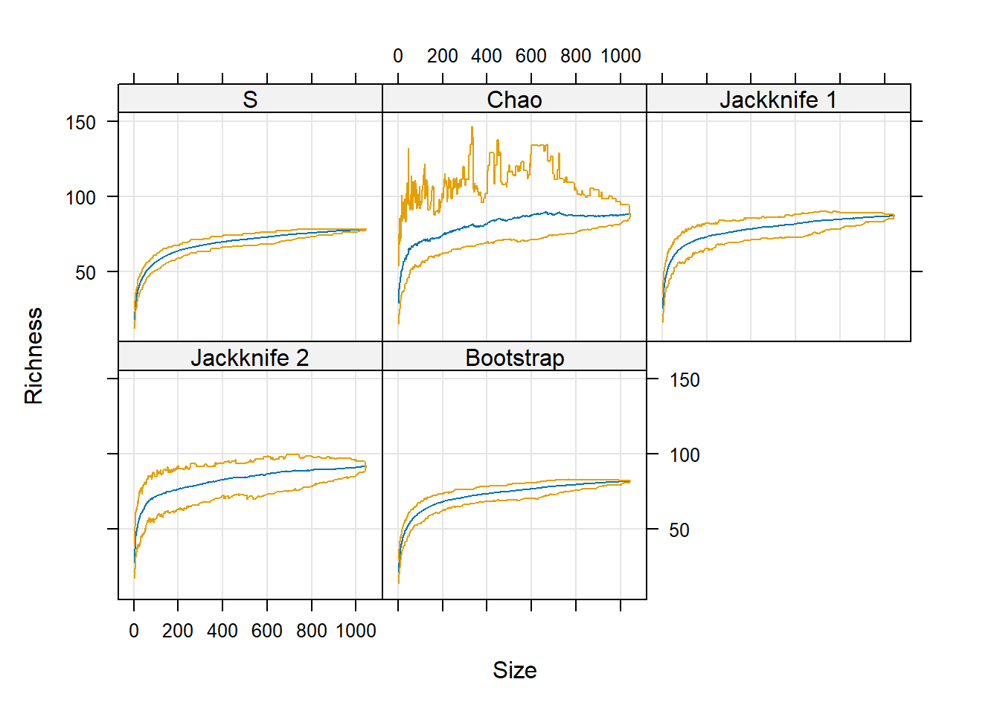

bird <- read.csv("data/bird.sta.csv")Clase 2
Clase 2: Analisis de Diversidad

El contenido de esta clase se basara mayoritariamente en el libro Community Ecology Analytical Methods Using R and Excel by Mark Gardener
Los índices de diversidad biológica son medidas cuantitativas que se utilizan para evaluar la diversidad de especies en un área determinada. Estos índices se utilizan comúnmente en la ecología y la conservación para medir la riqueza de especies, la evenness (equidad) de la distribución de especies y la distancia entre especies. Algunos ejemplos comunes de índices de diversidad biológica incluyen:
Índice de Shannon: mide la diversidad de especies en un área y también tiene en cuenta la evenness de la distribución de especies.
Índice de Simpson: mide la diversidad de especies en un área y también tiene en cuenta la riqueza de especies.
Índice de Berger-Parker: mide la diversidad de especies en un área y se basa en la riqueza de especies y en la proporción de individuos de la especie más abundante.
Índice de Margalef: mide la diversidad de especies en un área y se basa en la riqueza de especies y en la diferencia entre la riqueza de especies y el número de especies comunes.
Índice de Jaccard: mide la similitud entre dos conjuntos de especies y se basa en la proporción de especies comunes entre los conjuntos.
Riqueza de especie se refiere simplemente al numero de especies que hay en un area determinada. Para estimar la riqueza de especie solo requiere tener una lista de las especies observadas.
La riqueza de especies puede ser usada coma variable respuesta (dependiente) en varios analisis, sin embargo, para realizarlo hay que asegurarse que el esfuerzo de muestreo es el mismo para todas las replicas. Una vez hemos tomado en cuenta el problema de esfuerzo de muestreo, hay dos formas de analisar la riqueza de especies.
Comparar differencias en la riqueza de especie con alguna variable (categorica)
Correlacionar la riqueza de especie con alguna variable (numerica)
Primero vamos a cargar la base de datos bird.sta.csv para estimar la riqueza de especie por sitio de estudio.
Estimar la riqueza de especie por cada unidad de muestreo
En nuestra base de datos
birdcada fila corresponde a un esfuerzo de muestreo. Para poder estimar la riqueza de especie utilizaremos el paquetevegan.
- Instalar paquete
vegan
install.packages("vegan")- Cargar el paquete
vegan
library(vegan)Loading required package: permuteLoading required package: latticeThis is vegan 2.6-4- Utilizaremos el comando specnumber para estimar la riqueza de especie por unidad de muestreo
Riqueza <- specnumber(bird[,4:81])
head(Riqueza)[1] 9 8 7 6 11 8Observe que hemos creado la variable Riqueza la cual contiene la riqueza de especie para cada una de las filas de nuestra base de datos bird. El comando head() nos permite visualizar las primeras 6 observaciones.
Estimar la riqueza de especie por la variable basin
- Ahora Utilizaremos el comando specnumber condicionada por la variable
basin.
RiquezaBasin <- specnumber(bird[,4:81], bird$basin)
RiquezaBasin D L N
65 68 65 Como se puede observar tenemos obtenemos tres numeros (65, 68, 65 ), estos hace referencia a la riqueza de especie para basin D, L y N respectivamente.
Una simple comparacion de espcies solamente es posible cuando hay equivalencia en el esfuerzo de muestreo.
Un unico valor de riqueza de especie no es suficiente para una comparacion, por lo que tendremos que recurir a tecnicas estadisticas para saber si en realidad la riqueza de especie entre basin difiere.
Riqueza de especie por basin (visual )
Comencemos con una comparacion visual utilizando un grafico de caja
Basin Riqueza
1 D 9
2 D 8
3 D 7
4 D 6
5 D 11
6 D 8Observe que ahora tenemos varios valores de riqueza por basin.
para realizar la grafica de caja utilizaremos el comando boxplot()
boxplot(Riqueza ~ Basin, data= Basin,
main = "Riqueza de especie por basin")Que podemos concluir con este grafico de caja?
Riqueza de especie por basin (numerico)
Como la grafica de caja no muestra una diferencia marcada, vamos a intentar ser un poco mas descriptivos utilizando valores de tendencia central y dispersion.
Comenzemos estimando la media de la riqueza de especie por basin
tapply(Basin$Riqueza, Basin$Basin, mean) D L N
9.280702 9.710983 10.243017 Al parecer el basin N presenta una media ligeramente mayor que basin D y L, pero tenemos que revisar el error estandard. Para esto utilizaremos el paquete FSA
library(FSA)Warning: package 'FSA' was built under R version 4.3.3## FSA v0.9.5. See citation('FSA') if used in publication.
## Run fishR() for related website and fishR('IFAR') for related book.BasinRiqueza <- Summarize(Riqueza ~ Basin, data = Basin)Como se puede observar obtenimos una tabla con la cantidad de muestras (n) y desviacion standart (sd), esto nos permitira estimar el error estandar y los intervalos de confianza.
BasinRiqueza$ES <- BasinRiqueza$sd / sqrt(BasinRiqueza$n)
BasinRiqueza$IC95 <- 1.96 * BasinRiqueza$sd / sqrt(BasinRiqueza$n)| Basin | n | mean | sd | min | Q1 | median | Q3 | max | ES | IC95 |
|---|---|---|---|---|---|---|---|---|---|---|
| D | 342 | 9.280702 | 2.769255 | 3 | 7 | 9 | 11 | 20 | 0.1497442 | 0.2934986 |
| L | 346 | 9.710983 | 2.621593 | 3 | 8 | 9 | 11 | 21 | 0.1409377 | 0.2762379 |
| N | 358 | 10.243017 | 2.852026 | 4 | 8 | 10 | 12 | 22 | 0.1507343 | 0.2954392 |
Ahora que tenemos la media e intervalos de confianza podemos generar un grafico de caja modificado, utilizando el paquete ggplot2
library(ggplot2)
ggplot(data= BasinRiqueza, aes(x = Basin, y= mean)) +
geom_point() +
geom_errorbar(aes(ymin = mean - IC95,
ymax = mean + IC95)) +
labs(title = "Riqueza de especie por basin",
subtitle = "Intervalos de confianza al 95%",
y = "Riqueza")+
theme_classic()Que podemos concluir con este grafico de que utiliza la media e intervalos de confianza la 95% ?
Por ahora hemos realizado algunos analisis sin tomar en cuenta la cantidad de muestras por sitio, una forma de solucionar esto es utilizando una curva de acumulacion de especies.
La curva de acumulación de especies es un gráfico que muestra la relación entre el número de especies de una comunidad y el tamaño de la muestra del área en la que se encuentran. Se utiliza comúnmente en la ecología para entender cómo varía la biodiversidad en diferentes áreas y cómo afecta a la estabilidad y funcionamiento de los ecosistemas.
La curva de acumulación de especies se construye mediante el muestreo sistemático de un área y el registro del número de especies que se encuentran en cada muestra. A medida que se aumenta el tamaño de la muestra, se espera que el número de especies encontradas aumente también, pero a un ritmo decreciente. Esto se debe a que, a medida que se aumenta el tamaño de la muestra, es más probable que se incluyan especies raras y poco comunes, lo que se refleja en un aumento más lento del número de especies a medida que se aumenta el tamaño de la muestra.
La curva de acumulación de especies puede ser útil para comparar la biodiversidad de diferentes áreas y para entender cómo la diversidad de especies afecta a la estabilidad y el funcionamiento de los ecosistemas. También puede ser utilizada para predecir el número total de especies en un área determinada y para identificar áreas con alta biodiversidad que pueden ser prioritarias para la conservación.
Curva de acumulacion de especie
Para realizar la curva de acumulacion de especie necesitamos utilizar el comando specaccum() del paquete vegan
Riqueza <- specaccum(bird[,4:81], method = "exact")- Para visualizar la curva de acumulacion de especies nececitaremos utilizar el comando
plo()
plot(Riqueza,
ci.type = "poly",
ci.col = "gray",
ci.lty = 0,
col= "black",
main = "Curva de acumulacion de especies",
ylab = "Riqueza",
xlab= "Esfuerzo de muestreo")Comparacion de riqueza con curva de acumulacion de especie
Para realizar una comparacion de riqueza con una curva de acumulacion de especies, necesitaremos realizar algunas pasos extras
- Primero separar nuestra tabla
birdpor catergoria debasin
table(bird$basin)
D L N
342 346 358 Observe que tenemos tres categorias D, L y N
D <- subset(bird, basin == "D")
L <- subset(bird, basin == "L")
N <- subset(bird, basin == "N")- Ahora estimamos la curva de acumulacion de especie por basin
rar_D <- specaccum(D[,4:81], method = "exact")
rar_L <- specaccum(L[,4:81], method = "exact")
rar_N <- specaccum(N[,4:81], method = "exact")- Creamos un data frame para cada una de las categorias de basin
D_df <- data.frame(Basin = "D",
Riqueza = rar_D$richness,
DS = rar_D$sd,
Esfuerzo = rar_D$sites)
L_df <- data.frame(Basin = "L",
Riqueza = rar_L$richness,
DS = rar_L$sd,
Esfuerzo = rar_L$sites)
N_df <- data.frame(Basin = "N",
Riqueza = rar_N$richness,
DS = rar_N$sd,
Esfuerzo = rar_N$sites)- Ahora combinamos nuestras tablas
Basin_df <- rbind(D_df, L_df, N_df)- Necesitamos estimar los intervalos de confinza al 95%
Basin_df$IC95 <- 1.96 * Basin_df$DS / sqrt(1)- Por ultimo realizamos nuetro grafico con ggplot
ggplot(data= Basin_df, aes(x= Esfuerzo, y= Riqueza, fill = Basin))+
geom_line()+
geom_ribbon(aes(ymin = Riqueza - IC95,
ymax = Riqueza + IC95),
alpha = 0.4) +
theme_classic() +
labs(title = "Curva de acumulacion de especie")
ggsave("CAE.png", plot = last_plot(), units = "cm", width = 15, height = 8, dpi = 350)Que podemos concluir con este grafico?
Generalmente cuando realizamos muestreos no registramos algunas especies, en especial las especies raras. Hay varias tecnicas para estimar la riqueza de especie total en un sitio, estos metodos se pueden dividir en dos:
Estimaciones basadas en incidencia: Este metodo utiliza la frecuencia de especies por sitios
Estimaciones basadas en abundancia: Este metodo utilizada el conteo de especies en un sitio dado
Estimaciones basadas en incidencia
Son utiles cuando se tienen datos de presencia-ausencia, y tambien se pueden utilizar cuando tenemos abundancias.
Pueden ser calculados utilizando el comando specpool() del paquete vegan
Riqueza_incidencia <- specpool(bird[,4:81], pool = bird$basin)| Species | chao | chao.se | jack1 | jack1.se | jack2 | boot | boot.se | n | |
|---|---|---|---|---|---|---|---|---|---|
| D | 65 | 81.61793 | 14.80311 | 74.97076 | 3.454817 | 81.93857 | 69.21052 | 1.842376 | 342 |
| L | 68 | 88.19147 | 20.13051 | 76.97399 | 3.307911 | 83.93929 | 71.79805 | 1.779386 | 346 |
| N | 65 | 81.62011 | 14.80498 | 74.97207 | 3.153444 | 81.94132 | 69.32603 | 1.720709 | 358 |
Haremos un grafico rapido
plot(poolaccum(bird[,4:81]))
Estimaciones basadas en abundancia
Cuando se tienen datos de abundancia se pueden utilizar diferenctes tecnicas y estimadores para la riqueza de especies total para cada sitio.
Pueden ser calculados utilizando el comando estimateR del paquete vegan
Riqueza_abundancia <- estimateR(bird[,4:81])Warning in sqrt(sum(Deriv.Ch1 %*% t(Deriv.Ch1) * (diag(a) - a %*%
t(a)/S.ACE))): NaNs produced
Warning in sqrt(sum(Deriv.Ch1 %*% t(Deriv.Ch1) * (diag(a) - a %*%
t(a)/S.ACE))): NaNs producedRiqueza_abundancia <- data.frame <- t(Riqueza_abundancia)| S.obs | S.chao1 | se.chao1 | S.ACE | se.ACE |
|---|---|---|---|---|
| 9 | 11.0 | 2.572229 | 14.62500 | 1.7128863 |
| 8 | 10.5 | 3.138661 | 14.66667 | 1.5510290 |
| 7 | 14.5 | 8.064530 | 28.00000 | 0.9698548 |
| 6 | 9.0 | 4.099458 | 13.70370 | 1.7108677 |
| 11 | 18.0 | 6.625131 | 25.66667 | 1.6274701 |
| 8 | 13.0 | 5.493197 | 20.00000 | 1.3397344 |
Índice de Shannon: mide la diversidad de especies en un área y también tiene en cuenta la evenness de la distribución de especies.
Índice de Simpson: mide la diversidad de especies en un área y también tiene en cuenta la riqueza de especies.
El índice de diversidad de Simpson es una medida de la diversidad de especies en una comunidad o en un área determinada. Se utiliza para evaluar la riqueza de especies y la evenness (igualdad) en la distribución de las poblaciones de especies en un área determinada.
El índice de diversidad de Simpson se calcula sumando las probabilidades de encontrar dos individuos de cada especie al azar en una muestra, y luego tomando el inverso de esta suma. Matemáticamente, el índice de diversidad de Simpson se puede expresar como:
\(D = 1 / Σ(n / N)^2\)
Donde:
- D es el índice de diversidad de Simpson
- n es el número de individuos de cada especie en la muestra
- N es el número total de individuos en la muestra
- Σ es la sumatoria de todas las especies presentes en la muestra
El índice de diversidad de Simpson es una medida relativa y su valor puede variar entre 0 y 1, donde un valor más cercano a 1 indica una mayor diversidad de especies y una mayor igualdad en la distribución de las poblaciones de especies. El índice de diversidad de Simpson se utiliza comúnmente en la ecología y la conservación de la biodiversidad para evaluar la riqueza de especies y la estabilidad de los ecosistemas.
para estimar el indice de simpson podemos utilizar el comando diversity() del paquete vegan
Diversidad_simpson <- diversity(bird[,4:81], index = "simpson")
head(Diversidad_simpson)[1] 0.8757396 0.8595041 0.8437500 0.7600000 0.8979592 0.8600000El índice de Shannon es una medida de la diversidad de especies en una comunidad o en un área determinada. Se utiliza para evaluar la riqueza de especies y la evenness (igualdad) en la distribución de las poblaciones de especies en un área determinada.
El índice de Shannon se calcula sumando la entropía de cada especie en la muestra y luego multiplicando esta suma por el inverso de la entropía máxima posible. Matemáticamente, el índice de Shannon se puede expresar como:
\(H = -Σ(n / N) * ln(n / N)\)
Donde:
- H es el índice de Shannon
- n es el número de individuos de cada especie en la muestra
- N es el número total de individuos en la muestra
- Σ es la sumatoria de todas las especies presentes en la muestra
El índice de Shannon es una medida relativa y su valor puede variar entre 0 y ln(S), donde S es el número de especies presentes en la muestra. Un valor más alto del índice de Shannon indica una mayor diversidad de especies y una mayor igualdad en la distribución de las poblaciones de especies. El índice de Shannon se utiliza comúnmente en la ecología y la conservación de la biodiversidad para evaluar la riqueza de especies y la estabilidad de los ecosistemas.
para estimar el indice de simpson podemos utilizar el comando diversity() del paquete vegan
Diversidad_shannon <- diversity(bird[,4:81], index = "shannon")
head(Diversidad_shannon)[1] 2.138397 2.019815 1.906155 1.609438 2.341994 2.025326